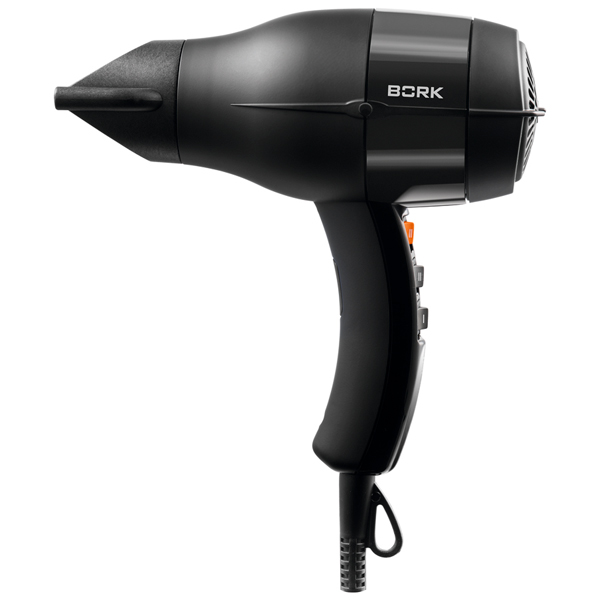
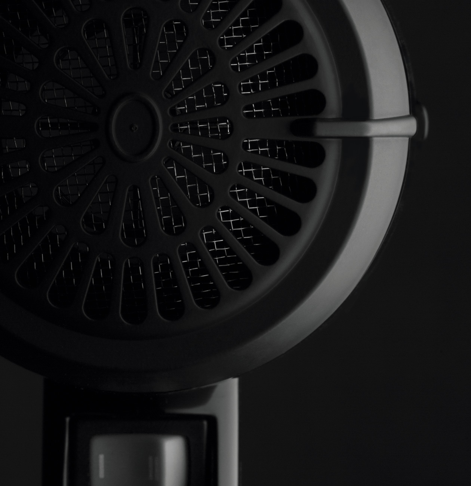
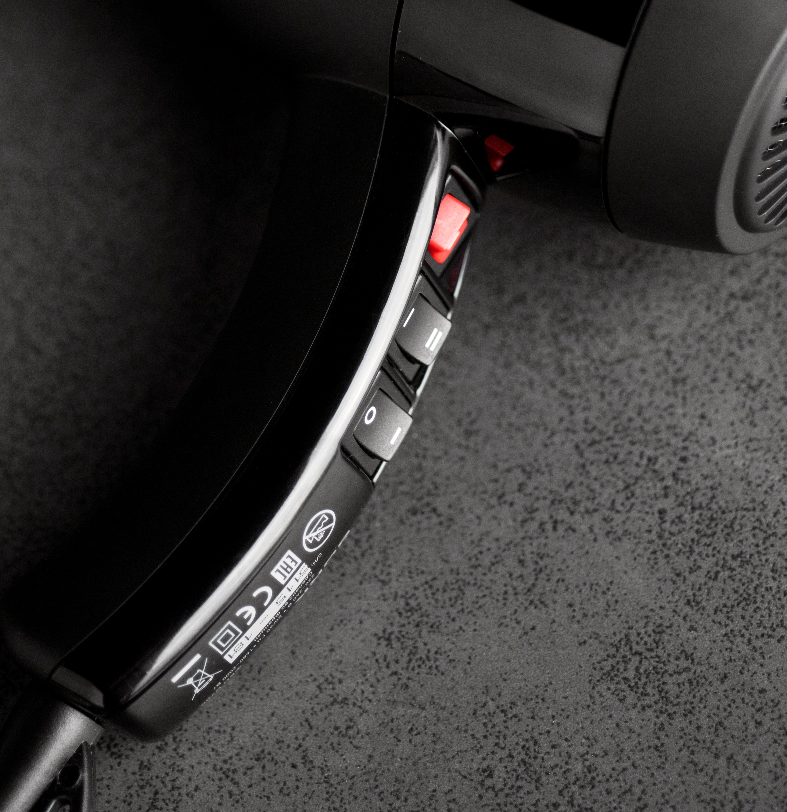
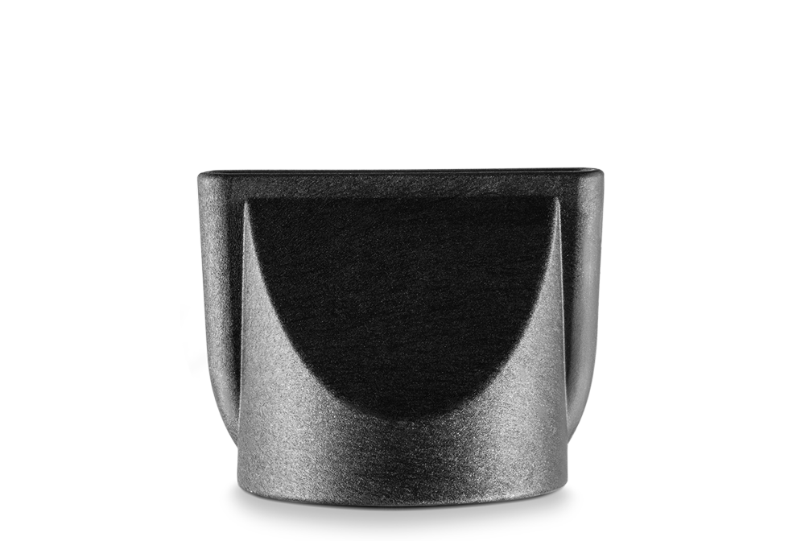
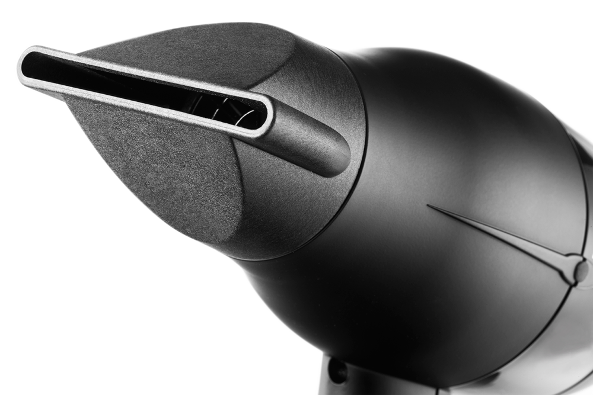
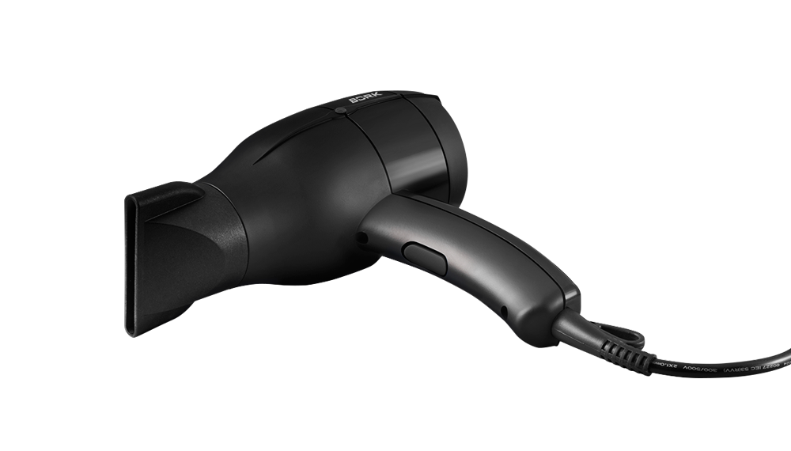

Фен BORK D700
Современные технологии для профессиональной сушки и укладки волос.
- 4 комбинации режимов
- Ультратонкая насадка концентратор
- Функция холодного обдува
Высокая скорость воздушного потока
Воздушный поток при работе с феном достигает скорости до 130 км/ч, что гарантирует быстрый результат.
4 комбинации температурного и скоростного режимов
Регулировка температуры воздушного потока и его скорости позволяют не только эффективно, но и бережно высушить волосы.
Насадка-концентратор
Ультратонкая насадка-концентратор шириной 6 мм позволит достичь эффекта салонной укладки, не выходя из дома.
Функция холодного обдува
Поток холодного воздуха позволит зафиксировать укладку после сушки.
Компактность и эргономичный дизайн
Максимальное удобство в использовании достигается благодаря уникальной ручке, двустороннему расположению кнопок и лаконичной форме.
Технические характеристики
Мощность 1680-2000 Вт
Скорость потока 130 км/ч
Производительность 86 куб.м/ч
Концентратор для сушки 8 мм
Концентратор для укладки 6 мм
Уровень шума 69 дБ
Длина кабеля 3 м
Вес 0,51 кг
Срок гарантии 1 год
Холодный обдув Есть
Материал Термостойкий пластик
Цвет Черный
Страна производства Франция
Сейлз аргументы
Сделано во Франции
Легкий вес 0.51 кг можно использовать в салонах красоты
Компактный удобно хранить
2 диффузора для максимального результата
Мощный поток воздуха 130 км/ч который позволяет сушить волосы быстро
Защитная металлическая решетка
Низкий уровень шума